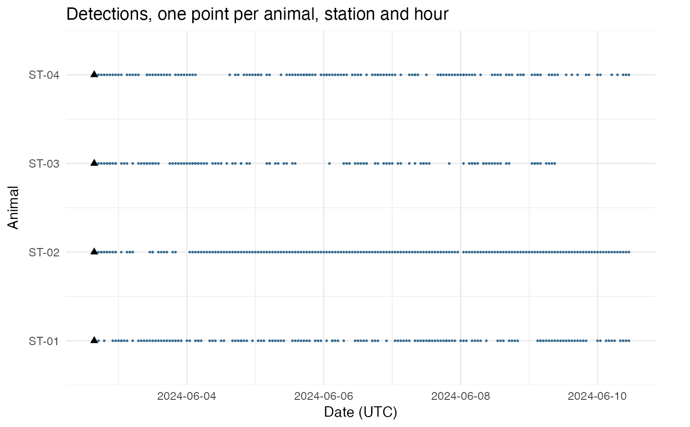
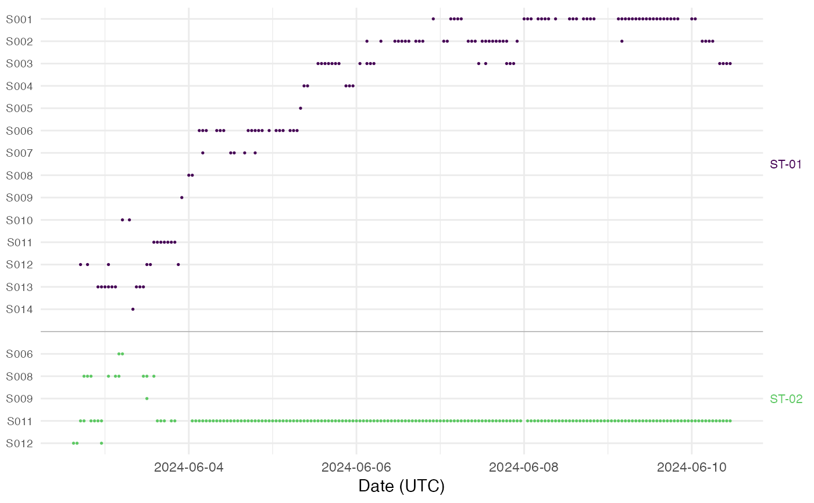

Draws one row per animal and one point per animal, station and hour with a
detection. With at most 12 stations the points are coloured by station on
the turbo option of ggplot2::scale_colour_viridis_d(), keyed "Station" in
natural order (STN2 before STN10), so neighbouring stations of the key
differ in hue. With more stations the points are one colour, and
rows = "station" names the stations.
Usage
plot_abacus(x, animals = NULL, rows = c("animal", "station"))Arguments
- x
A
detset().- animals
Optional
animal_idvalues to draw, in order. Given, they replace the animal rows and no transmitter rows are drawn.- rows
"animal", one row per animal coloured by station, or"station", one row per animal and station.
Value
A ggplot object; print it to draw it, or add layers, scales and
labels to it with +. Its data is the data frame of the points drawn:
animal_id (the transmitter code on a transmitter row), station_id
and hour. The attribute never_detected of the data names the animals
with an empty row, transmitter_rows the transmitters drawn with no
animal, and left_out counts the tagged animals not drawn. With
rows = "station", a column row gives the row of each point.
Details
Detections with no animal, such as those of reference tags, get one row per transmitter below the animals, labelled with its code. A tagged animal never detected keeps an empty, labelled row when it was released inside the time the detections span. Animals released outside that span with no detection are left out, so a month cut from a long study keeps its own time axis. The time axis runs over the detections, and a triangle marks each release inside it.
With rows = "station", each animal gets one row per station that heard
it, labelled with the station. The animals are coloured in turn, parted by
grey lines and named at the right in their colour. An animal heard at one
station day after day, as a dead animal or a shed tag is, shows as one
long run on one row.
Row labels and animal names that would print over one another are thinned
when the plot is drawn. detqc_example, four walleye from 2 to 10 June 2024,
gives 37 rows with rows = "station", and every row is named. A study of
many animals can give hundreds: then only some station rows are labelled,
an animal with one or two rows can lose its name to a neighbour, and the
rows have no grid lines (none above 60 rows). Draw fewer animals with
animals, or a taller figure, to name every row.
Examples
study <- detqc_example
dets <- detset(study$detections, study$deployments, study$animals)
plot_abacus(dets) +
ggplot2::labs(title = "Detections, one point per animal, station and hour")

abacus <- plot_abacus(dets, animals = c("ST-01", "ST-02"), rows = "station")
attr(abacus$data, "never_detected")
#> character(0)
abacus
